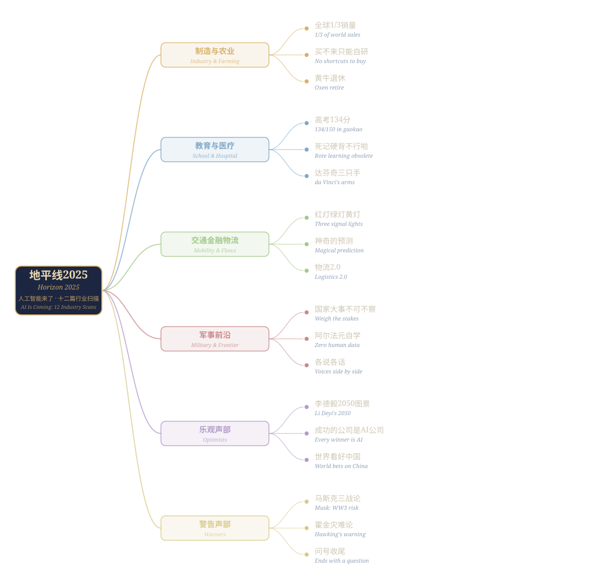

地平线2025
〇 · 书籍信息
基本信息
| 书名 | 《地平线2025：人工智能来了》——熊清泉主编：以 2017 年国务院《新一代人工智能发展规划》为纲，把 AI 写成十二个行业的落地扫描 |
|---|---|
| 结构 | 12 篇：制造 / 农业 / 教育 / 医疗 / 交通 / 金融 / 物流 / 军事 + 阿尔法元 / 世界看好中国 / 霍金的预言 / 科技前沿——每篇配「■前方来电」新闻拼贴：数据、采访、预言三线并进 |
| 体裁 | 集体编写的行业科普：它的价值不在理论深度，在快照精度——2018 年的中国把 AI 想成什么样，这本书是一张底片 |
| 立场 | 乐观的国家级叙事：李德毅院士的 2050 图景、马斯克的战争警告、霍金的灾难预言同台——一手是规划图，一手是风险清单，两头都给你 |
| 一句话 | AI 不是一个行业，是一层底座：十二个行业各有各的「+AI」，而每篇的真正主角都是同一个问题——中国速度能不能追上指数曲线。 |
一 · 核心主题总览
十二篇行业扫描里藏着四组母题：① 市场换来的新起点
2016 年中国工业机器人销量占全球近 1/3；但「传统工业机器人比发达国家滞后一二十年」——新松总裁曲道奎的判断是：新一代机器人领域大家几乎在同一个起点上，中国有了赶超的机会——前提是自主研发：「机器人这种高新技术拿钱从国外是买不来的」。
② 教育被反向定义
AI 靠大量识别和记忆已有知识工作——「它可以替代甚至超越那些通过死记硬背、大量做题而掌握知识的人脑」。高考机器人已考出 134 分（满分 150），死记硬背不行啦——教育必须从「装知识」切换到「练思维」。
③ 永生的技术想象
达芬奇手术机器人、智能药物研发、智能影像识别——医疗被写成 AI 最有纵深的应用场。「人工智能对医疗领域的影响是开创性的、变革性的、颠覆性的」——篇名「可以实现永生吗」把终极问题摆上了台面。
④ 预言的罗生门
马斯克说 AI 主导权之争「很有可能成为第三次世界大战的起因」，普京说「谁能成为人工智能领域的领先者，谁就能统治整个世界」，霍金反复警告灾难——第十一篇把三张嘴放在一起，不给结论，只留开放题。
二 · 第一段 制造 · 农业 —— 机器进车间与下田—— 全球三分之一 · 望天收 ——
全球三分之一的市场
第一篇开篇就是 IFR 战报：「2016 年中国工业机器人销售量增长 27%，销量占全球近 1/3，位列世界第一。」京东仓库的工业机器人「1 小时内搬运 3600 个包裹，效率是人工的 4 倍」。但篇内随即亮出短板：中国传统工业机器人滞后发达国家一二十年；新松机器人研发团队占员工 80%，产品 2/3 出口——「逼着我们自主研发」的另一个说法是：这条路没有捷径可买。外国供应商的感受是同一个词：「中国客户的特点就是快」——科尔摩根把它贴在美国销售部门的墙上；国产企业不等样品完全成熟就和客户共同开发，节奏本身成了竞争力。
◆ 语言学习 · 概念 · 机器人革命
| IFR | 国际机器人联合会：全球机器人市场数据的权威口径 |
|---|---|
| 机器人革命 | 融多种高科技为一体的技术革命——各国经济发展的下一个战略制高点 |
| 三大应用 | 工业制造 · 国防安全与航空航天 · 生活服务——汽车业占工业应用 40% |
| 中国速度 | 边研发边对接客户的开发节奏——后发者的方法论 |
句型 ｜ 「机器人这种高新技术拿钱从国外是买不来的，逼着我们自主研发，整个研发团队占公司员工80%。」——被动句式里的主动逻辑：封锁反而是研发的最强预算。
与「望天收」告别
第二篇写给农业：「与『望天收』告别」——无人拖拉机、农用无人机、背包机器人和收割机器人，被李德毅院士称为新一代「农民」。「农村城镇化导致黄牛退休、『铁牛』耕地，农民进城、专家种田」——黄牛退休四个字，把千年农耕史压缩成一句用工公告。农业是 AI 落地里最保守也最惊人的场景：不是替代体力，是替代经验——看天吃饭的「望天收」，被传感器与算法接管成看数据吃饭。
◆ 语言学习 · 概念 · 智慧农业
| 望天收 | 靠天吃饭的传统农作——AI 农业的反面起点 |
|---|---|
| 黄牛退休 | 李德毅 2050 图景的修辞：耕牛被农机替岗——产业史的黑色幽默 |
| 无人拖拉机 | 自动驾驶农机：农业版的工业机器人 |
| 专家种田 | 农民进城、专家留田——人力结构随技术重组 |
习语 ｜ 「黄牛退休、铁牛耕地」——对仗句写产业更替：一头牛的退休，顶得上一篇农业现代化白皮书。
三 · 第二段 教育 · 医疗 —— 考场与手术台—— 134 分 · 达芬奇 ——
死记硬背不行啦
第三篇的标题即结论。AI 机器人已参加高考数学，两台得分 134 分与 105 分（满分 150），「据说人工智能机器人的目标是到 2020 年能够全部参加高考」。篇内的推导冷静而锋利：AI 的学习方式就是大量识别和记忆已有知识——所以它替代的正是「死记硬背、题海战术」培养出来的能力；「未来的人工智能会让当前教育制度下培养学生的优势荡然无存」。篇外对照：奥巴马 2016 年投入 40 亿美金，「要让每个美国孩子在小学具备最简单的编程能力」——两个国家在同一个判断上撞了车：下一代的必修课是跟机器对话。
◆ 语言学习 · 概念 · AI 时代的学力
| 高考机器人 | AI 攻克标准化考试的标志事件——记忆型智力的天花板演示 |
|---|---|
| 创新驱动 | 经济话语与教育话语的交汇点：装知识不如练思维 |
| 编程普及 | 美英的 6–18 岁 AI 教育——逻辑思维成为新的读写能力 |
| 思维方式 | AI 教育的真正产出：不是知识量，是与未来对话的主动权 |
句型 ｜ 「帮助孩子自信应对未来变化，掌握与未来对话的主动权。」——全书在教育篇给出的唯一处方：教育的目标从「应对考试」改写为「对话未来」。
可以实现永生吗
第四篇把医疗写成 AI 的最深战场：达芬奇手术机器人「3 个机械手臂……灵敏度远超于人类」，前列腺癌根治术在美国已几乎取代传统手术；智能药物研发用深度学习筛选化合物——Atomwise 可在数据库中评估 820 万种候选化合物。篇内把医疗史写成三级跳：数字医疗（院内电子化）→ 互联网医疗（流程上互联网）→ 智慧医疗（AI 接管诊断与手术环节）——「人工智能对医疗领域的影响是开创性的、变革性的、颠覆性的」。至于篇名的「永生」：书没有回答，只把 DARPA 2800 万美元的人脑学习研究摆在证据链尽头——计算出大脑学习的原理之日，就是讨论永生的时刻。
◆ 语言学习 · 概念 · 智慧医疗
| 达芬奇机器人 | 手术机器人代名词：360 度视野 + 千里之外的远程手术 |
|---|---|
| 三级跳 | 数字医疗→互联网医疗→智慧医疗——医疗数字化的三段进程 |
| 智能药物研发 | AI 筛选化合物：缩短周期、降低成本、提高成功率 |
| 五大应用 | 医疗机器人 · 药物研发 · 智能诊疗 · 影像识别 · 健康管理 |
习语 ｜ 「开创性的、变革性的、颠覆性的」——三个「性的」连排是政策文本的典型句式：在 2018 年的语境里，它同时是判断书与动员令。
四 · 第三段 交通 · 金融 · 物流 —— 红绿灯与现金流—— 自动驾驶 · 预测 · 物流2.0 ——
红灯·绿灯·黄灯
第五篇把城市交通写成一次信号系统升级：自动驾驶不只是替代司机——车联网重构路权、红绿灯时长按实时车流自适应、事故责任链需要重新立法。交通的 AI 化难点不在算法在规则：机器可以学会开车，城市必须学会给机器立规矩——灯有三种颜色，恰好对应技术的三种状态：可行、存疑、禁止。
◆ 语言学习 · 概念 · 智慧交通
| 自动驾驶分级 | 从辅助驾驶到完全无人——交通 AI 的技术刻度 |
|---|---|
| 车路协同 | 车联网 + 智能信号系统：路也要学会思考 |
| 责任链 | 事故归责从人转向系统——AI 时代的立法难题 |
| 自适应信号 | 红绿灯时长按车流实时调整——城市血管的算法调度 |
句型 ｜ 「红灯·绿灯·黄灯」——篇名借交通信号写监管态度：放行、观察、禁止三态并存，正是所有 AI 落地的真实节奏。
神奇的预测与物流 2.0
第六篇「神奇的预测」讲金融 AI：从量化模型到智能投顾，预测的对象从价格扩展到信用与风险；第七篇宣布「智慧物流 2.0 时代全面开启」——仓储机器人、无人分拣、路径优化把物流从人力密集改写成数据密集。两篇合起来是同一句话：金融与物流都是「搬东西」的行业——一个搬价值，一个搬包裹；AI 的贡献都是让搬运决策先于搬运本身发生。
◆ 语言学习 · 概念 · 数据搬运
| 智能投顾 | 算法化的资产配置建议——金融服务的平民化入口 |
|---|---|
| 量化模型 | 从历史数据中寻找统计规律——金融 AI 的祖传手艺 |
| 智慧物流2.0 | 从自动化分拣到全局调度的升级——物流的操作系统化 |
| 路径优化 | 包裹的每一公里都被算法重新计算——效率的直接来源 |
习语 ｜ 「神奇的预测」——金融篇标题的清醒之处在书内文：预测不是水晶球，是概率管理——「神奇」二字是营销词，不是技术词。
五 · 第四段 军事 · 前沿 —— 战争与预言—— 不可不察 · 霍金 · 阿尔法元 ——
国家大事不可不察
第八篇借《孙子兵法》开篇语定调：AI 与军事的结合——无人化装备、情报分析、网络战。书里没有渲染武器奇观，而是照搬孙子的敬畏：「兵者，国之大事，死生之地，存亡之道，不可不察也」——新技术进战场的第一课，是先计算代价。随后两篇转向自信：「阿尔法元」不学人类棋谱自我对弈超越前代；「厉害啦！中国」汇总国际舆论对中国 AI 地位的重估——阿尔法元的真正震撼不在赢棋，在学习范式：没有老师，自己跟自己下——机器第一次绕开了人类经验。
◆ 语言学习 · 概念 · 学习范式
| 不可不察 | 孙子兵法开篇语：对战争保持敬畏计算——AI 军事化的前置程序 |
|---|---|
| 阿尔法元 | AlphaGo Zero：零人类棋谱自学成才——学习范式的分水岭 |
| 自我对弈 | 机器以自身为对手生成训练数据——经验不再是必需品 |
| 军民融合 | AI 技术在国防与民用领域的双向流动 |
句型 ｜ 「谁能成为人工智能领域的领先者，谁就能统治整个世界。」——普京的话被书引用为地缘注脚：AI 从技术议题升格为主权议题，只隔了一句狠话的距离。
霍金的预言能走多远
压轴篇不设裁判：马斯克 2017 年 9 月连续发推，「国家层面围绕人工智能主导权展开的争夺，很有可能成为第三次世界大战的起因」；面对核试验话题他答网友：「在对人类文明构成威胁的榜单中，朝鲜的排位是靠后的。」霍金则反复警告 AI 将给人类带来灾难。书的处理方式是「各说各话」：三个预言家的口径互相打架，篇末不站队——把 2018 年的真实舆论水位原样封存，这正是这本快照式科普留给后人的史料价值。
◆ 语言学习 · 概念 · 风险叙事
| 三次大战论 | 马斯克命题：AI 主导权争夺可能引发世界大战 |
|---|---|
| 榜单靠后 | 马斯克对朝鲜威胁的排序回答——AI 风险被置于核风险之上 |
| 灾难论 | 霍金的长期警告：不受控的 AI 是文明级风险 |
| 各说各话 | 本篇的方法：并列呈现不裁决——快照式科普的诚实 |
习语 ｜ 「霍金的预言能走多远？」——全书最后一句提问式的标题：科普书难得地以问号收尾——把不确定留给读者，是 2018 年留给今天的诚意。
六 · 人物图鉴与成长弧线—— 主角配角 · 一张表看穿 ——
主要人物
熊清泉（主编）——本书的统筹者：把十二个行业的分散综述组织成一张国家视角的 AI 快照——编者立场是「集科学性、知识性、前瞻性、可读性于一体」的四合一工程
李德毅——中国工程院院士、中国人工智能学会理事长：给出 2050 年图景——「家家有机器人」的愿景发言人，全书乐观基调的定调者
曲道奎——新松机器人总裁：坦承滞后一二十年、强调自主研发——全书最诚实的行业内声部
马斯克 / 霍金——压轴篇的两位预言家：一个警告 AI 世界大战，一个警告文明级灾难——书把他们并排摆放而不裁决，风险叙事由读者自行合成
次要人物（功能位）
| 刘伟峰 | 科尔摩根中国区总经理：「中国客户的特点就是快」——外资视角的中国速度证人 |
|---|---|
| 高考机器人 | 两台分别考出 134 分与 105 分——教育篇的钉子：标准化考试被 AI 拿下之日，教育改革不再有借口 |
| 达芬奇 | 手术机器人代名词：3 机械臂、远程手术——医疗篇里最具体的「永生」影子 |
| 普京 | 「谁能领先 AI 谁就能统治世界」——被引用为地缘政治的天平砝码 |
七 · 主题与象征—— 每个道具都在说话 ——
| 地平线 ↔ 2018 快照 | 书名的天文意象：地平线是看得见却走不到的线——2018 年望见 2025，谁也没答应你抵达 |
|---|---|
| 黄牛退休 ↔ 产业更替 | 农业篇的黑色幽默——一头牛的岗位交接，写尽千年农耕的谢幕方式 |
| 134 分 ↔ 教育倒逼 | 高考机器人的分数——不是学生考过了机器，是机器考住了教育 |
| 三色灯 ↔ 监管节奏 | 红灯绿灯黄灯——技术放行的三态刻度盘 |
| 问号收尾 ↔ 诚实 | 「霍金的预言能走多远？」——全书唯一的感叹号都没给，最后一个标点是个问号 |
八 · 写作手法赏析—— 怎么写，就能怎么学 ——
① 行业分篇
十二篇各扫一个行业——把「AI」这个抽象名词拆成十二张具体工位
② 前方来电
每篇嵌新闻拼贴——报道体插入综述体，让数据带现场感
③ 专家三线
院士愿景 / 企业家坦白 / 预言家警告——三种声部不打架，各有各的篇位
④ 快照价值
预测与现实的误差本身就是史料——2018 年的乐观被时间自动加注
九 · 名段欣赏—— 原文精读 · 逐段赏析 ——
十 · 金句摘录—— 14 条 · 中英对照 · 带出处 ——
"人工智能的迅速发展将深刻改变人类社会生活、改变世界。"—— 前言 · 引《新一代人工智能发展规划》
"机器人革命是世界性的、时代性的、颠覆性的。只有原创性技术，才能使我们成为机器人产品和机器人市场规则的重要制定者和主导者。"—— 前言
"农村城镇化导致黄牛退休、「铁牛」耕地，农民进城、专家种田。"—— 前言 · 李德毅
"今后，一个成功的公司将会是人工智能公司！"—— 前言
"2016年中国工业机器人销售量增长27%，销量占全球近1/3，位列世界第一。"—— 第一篇 · IFR
"机器人这种高新技术拿钱从国外是买不来的，逼着我们自主研发。"—— 第一篇 · 曲道奎
"工业机器人可在1小时内搬运3600个包裹，效率是人工的4倍。"—— 第一篇 · 前方来电
"中国客户的特点就是快。"—— 第一篇 · 刘伟峰
"未来的人工智能会让当前教育制度下培养学生的优势荡然无存。"—— 第三篇
"据说人工智能机器人的目标是到2020年能够全部参加高考。"—— 第三篇
"人工智能对医疗领域的影响是开创性的、变革性的、颠覆性的。"—— 第四篇
"谁能成为人工智能领域的领先者，谁就能统治整个世界。"—— 第十一篇 · 普京
"国家层面围绕人工智能（AI）主导权展开的争夺，很有可能成为第三次世界大战的起因。"—— 第十一篇 · 马斯克
"在对人类文明构成威胁的榜单中，朝鲜的排位是靠后的。"—— 第十一篇 · 马斯克
十一 · 拓展阅读—— 原文 · 词条 · 译文 ——
十二 · 个人感悟与心得—— 三点心得 ——
三点感悟
① 快照也是史料
2018 年的预测有大量误差，但误差本身就是信息：读行业报告的正确姿势是双层阅读——读它的判断，也读它的乐观程度。地平线之所以叫地平线，就是因为每代人都要重新画一次。
② 教育在反向定义自己
高考机器人 134 分这一事件比任何教育改革文件都锋利：凡是机器能批量通过的能力，都将不再是护城河；教育的重心从「装满知识」移向「提出问题」，这本书在 2018 年已经把话说完了。
③ 风险的排序权在自己
马斯克把 AI 风险排在核试验之前——排序即价值观。对个人与机构同理：你以为的最大威胁清单，决定你把资源投向哪里；定期重排这张清单，比预测未来更实用。
这本书是 2018 年射向 2025 的一束探照灯——光柱里能看到当年的期待与恐慌，而灯外的事实早已另写一稿。
十三 · 一页速查（复习用）
| 十二篇结构 | 制造/农业/教育/医疗/交通/金融/物流/军事 + 阿尔法元/中国/霍金/前沿 |
|---|---|
| 机器人战报 | 2016 年中国销量占全球近 1/3；自主研发是唯一路线 |
| 教育反转 | AI 靠记忆工作，死记硬背培养的优势将被清零 |
| 医疗三级跳 | 数字医疗→互联网医疗→智慧医疗——达芬奇是现场证据 |
| 预言并列 | 马斯克三战论 · 普京统治论 · 霍金灾难论——不裁决，封存舆论 |
十四 · 全书思维导图—— 一图纵览 ——

一图纵览全书骨架 · 中英双语对照 · 手机端可左右滑动查看全图